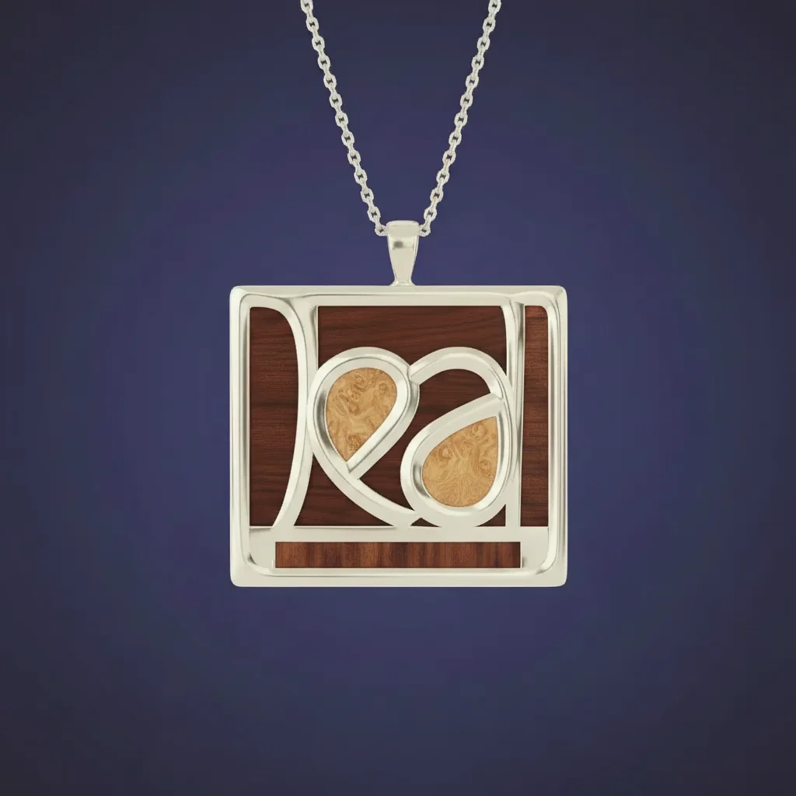
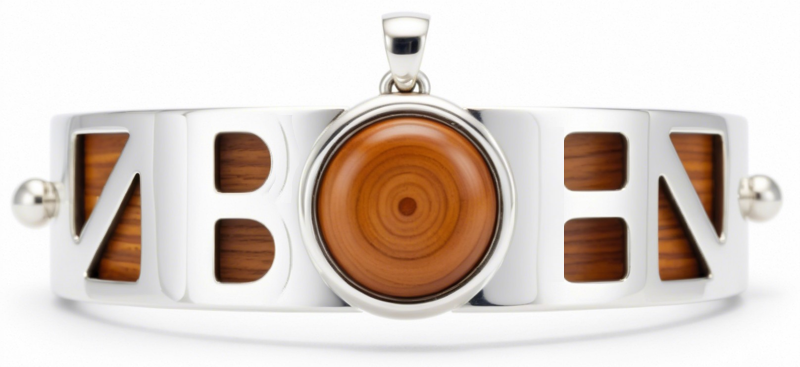
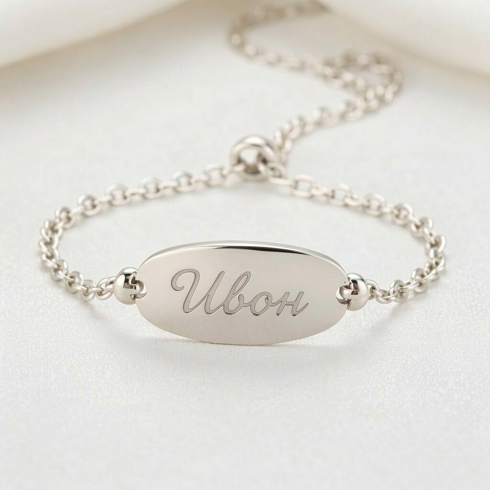

Ивон
Скъпа Ивон,
Преди да се родиш, имаше едно друго име, което беше избрано за теб.
„Деа“ означава богиня. Идеята беше името ти да бъде написано на кирилица и да бъде част от нещо специално, направено лично за теб.

Но тогава баща ти, Димитър, реши, че би предпочел нещо по-традиционно. Името се промени.
Така „Деа“ остана като една малка част от историята преди да станеш Ивон.
И после се появи Ивон.
Има и друга малка нишка в тази история.
Един мой приятел от Аруба се казва Yvonne. И когато стана ясно, че името ти ще бъде Ивон, и двамата го харесахме.
Името има стара връзка с тиса — Taxus — дърво, известно със своята издръжливост и устойчивост. Оттам идва и една стара символика: тисът се свързва с лъковете и стрелците, а стрелците — с умението да защитават, да бъдат търпеливи и точни и да пазят другите.
Затова ми хареса мисълта, че в името ти може да има нещо от тази символика:
устойчивост, издръжливост и защита.
Първоначално мислех за нещо сложно.
След като вече имаше име, започнах да измислям подаръка ти. Първата идея беше доста по-сложна — комбинация от дърво и сребро, с много повече дизайн и детайли.

Беше красиво. И ми харесваше идеята да направя нещо необичайно, което очевидно е било измислено специално за теб.
Но после започнах да мисля какво всъщност искам да ти дам.
И разбрах, че не искам подаръкът да бъде ценен само защото е красив.
Затова избрах простото.

Само името ти.
Семпло. Ненатрапчиво. Нещо, което можеш да носиш и когато си малка, и когато вече си пораснала.
И на пръв поглед изглежда почти като сребро.
Но има една тайна.
Не е сребро.
Изработено е от бяло злато.
Избрах бяло злато именно защото не изглежда натрапчиво като злато. Исках да изглежда просто, почти като сребро.
Но всъщност материалът има истинска стойност.
И това беше напълно нарочно.
Надявам се никога да не ти потрябва по тази причина.
Надявам се животът ти да бъде достатъчно добър, така че никога да не ти се налага да продаваш този подарък.
Но животът понякога е непредвидим.
Може някой ден да настъпи труден момент. Може да имаш нужда от пари бързо. Може да се окажеш далеч от дома или да попаднеш в ситуация, в която малко помощ би променила много неща.
Ако това някога се случи, искам да знаеш нещо:
Не е нужно да пазиш този подарък на всяка цена.
Той е направен така, че да има стойност и извън спомена, който носи. Ако някога наистина се нуждаеш от него, продай го.
Не се чувствай виновна.
Ти винаги ще бъдеш по-ценна от каквото и да е парче злато.
Има още едно място за история.
На гърба нарочно е оставено достатъчно място.
Един ден там могат да бъдат гравирани две дати:
твоето раждане
и твоето кръщение
Така с времето това малко бижу ще носи не само името ти, но и две важни точки от началото на твоя живот.
И ако един ден, много години от сега, погледнеш това малко бижу и се чудиш защо съм избрал нещо толкова просто, вече ще знаеш.
То е трябвало да изглежда като сребро.
Трябвало е да бъде достатъчно обикновено, за да не привлича излишно внимание.
Но вътре в тази простота има нещо истински ценно — малък резерв, който е твой.
И най-вече — мисълта на човек, който е искал да ти остави нещо, което може да бъде до теб не само в добрите времена.
И така историята стигна до Ивон.
От Деа — богинята.
През решението на баща ти за по-традиционно име.
През едно име, което свързва Аруба, старото значение на тиса и символиката на защитника.
И накрая — до едно малко име, написано върху бяло злато.
Ивон.
Надявам се да го носиш, защото ти харесва.
Надявам се да го пазиш, защото ти напомня за този момент.
И се надявам никога да не ти се налага да използваш скритата му стойност.
Но ако някога животът го изисква — знай, че точно за това съм го избрал така.
И че зад този малък подарък стои една много проста мисъл:
Исках да ти дам нещо за днес,
което да може да се погрижи малко за теб и утре.
С обич,
твоят кръстник